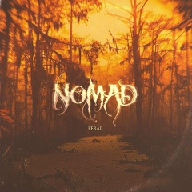

Mastiff - BORK (Special Edition LP)

There's some rather exciting stuff coming your way from APF Records over the next 12 months.
The Grand Mal album in October, the new PIST record in November, more from The Hyena Kill and Desert Storm confirmed for next year, plus a Gandalf the Green (possible double-album), and there's a Redeye Revival release in the works too. Oh, and a couple of new bands are joining the label which we are mega thrilled about. And much much more.
Please help us fund all this by buying something. Every penny we make goes back into releasing more riffs, and there's some tungsten-strength ones we are looking forward to mauling your with ears with real soon.
Hit all our 17 bands up via the APF Bandcamp page: apfrecords.bandcamp.com
Spunk your dollar at the APF Big Cartel page: apfrecords.bigcartel.com
Thanks for your support. From APF and:
